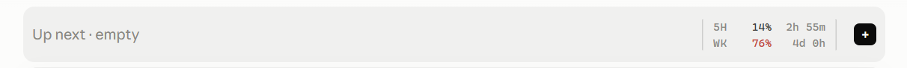

See your Claude Code usage limits at all times
Free, open-source Claude Code mods: your 5-hour and weekly usage with a reset countdown always above the prompt, one-click next steps after every reply, and one-click new chat and push buttons. Works in the Claude Desktop app and the terminal.
Get it on GitHubInstall in 30 seconds

The band above the Claude Code prompt: next steps on the left, usage limits on the right.
Install
Needs Claude Code 2.1.287 or later. Run once per computer; no GitHub account needed:
claude plugin marketplace add pawandeepdhall/claude-mods claude plugin install usage-band@my-claude-mods claude plugin install next-steps@my-claude-mods
Already in a session? Run /reload-plugins.
What you get
usage-band: Claude usage limits tracker
- 5-hour limit: percent used and time to reset
- Weekly limit: percent used and days to reset
- Turns amber, then red, before you hit the limit
- ＋ opens a new chat in one click
- ↑ commits and pushes to GitHub (git projects)
next-steps: one-click next steps
- Up to 3 suggested next steps after every reply
- Shown as buttons; click one to send it
- Short and specific to your conversation
- Hidden while Claude works
FAQ
How do I see my Claude Code usage limit?
Install usage-band. Your 5-hour and weekly usage show above the prompt in every session, instead of running /usage over and over.
When does my Claude 5-hour limit reset?
The mod shows a live countdown (↻) next to each limit, such as ↻ 2h 55m.
Can Claude Code suggest what to do next?
Yes. With next-steps, up to 3 suggested next steps appear as buttons after every reply. Click one and it is sent as your next message.
Is it safe?
Mods run with your permissions, so the README lists exactly what each mod does. Nothing is sent anywhere except your own Claude Code session. Check it yourself with claude plugin validate.